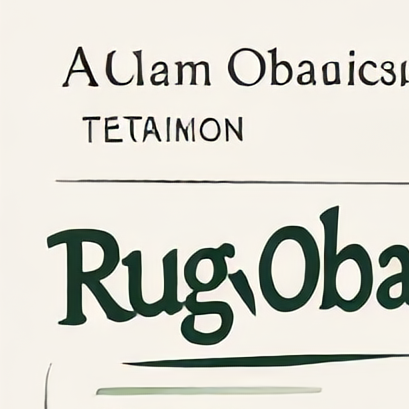

Memuat studi kasus...
INTERAKTIF
Studi Kasus
Pelajari skenario nyata interaksi obat dan literasi obat.

Penting: Ini adalah materi edukasi umum, bukan diagnosis, resep, atau saran dosis pribadi. Selalu konsultasikan dengan dokter atau apoteker sebelum menggunakan obat.
✓ Ditinjau oleh Apoteker